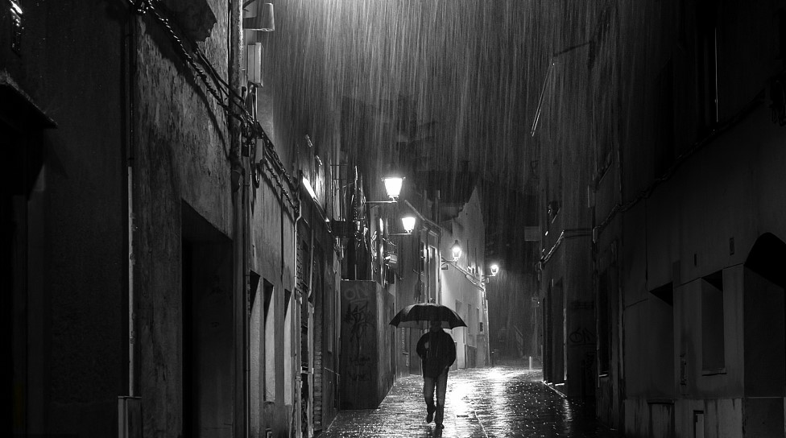

Poem : The Rainy Day
The day is cold, and dark, and dreary;
It rains, and the wind is never weary;
The vine still clings to the mouldering wall,
But at every gust the dead leaves fall,
And the day is dark and dreary.
My life is cold, and dark, and dreary;
It rains, and the wind is never weary;
My thoughts still cling to the mouldering past,
But the hopes of youth fall thick in the blast,
And the days are dark and dreary.
Be still, sad heart! and cease repining;
Behind the clouds is the sun still shining;
Thy fate is the common fate of all,
Into each life some rain must fall,
Some days must be dark and dreary.
Analysis of "The Rainy Day"
The poem "The Rainy Day" by Henry Wadsworth Longfellow speaks to the universal human experience of facing difficult times. Longfellow uses the rainy day as a metaphor for life's challenges and sorrows. He acknowledges the persistence of hardship with phrases like "the wind is never weary." The repeated reference to the vine and the dead leaves suggests that while time may weaken life's structures, there is an inevitable cycle of loss and renewal.
The final stanza, however, shifts towards a hopeful message. Longfellow reminds the reader that beyond the immediate gloom, the sun continues to shine. It's a call to resilience and optimism, reminding us that sorrow is a common experience, and brighter days are ahead. In essence, "The Rainy Day" is a poem about hope and perseverance in the face of despair.
Artwork Gallery
